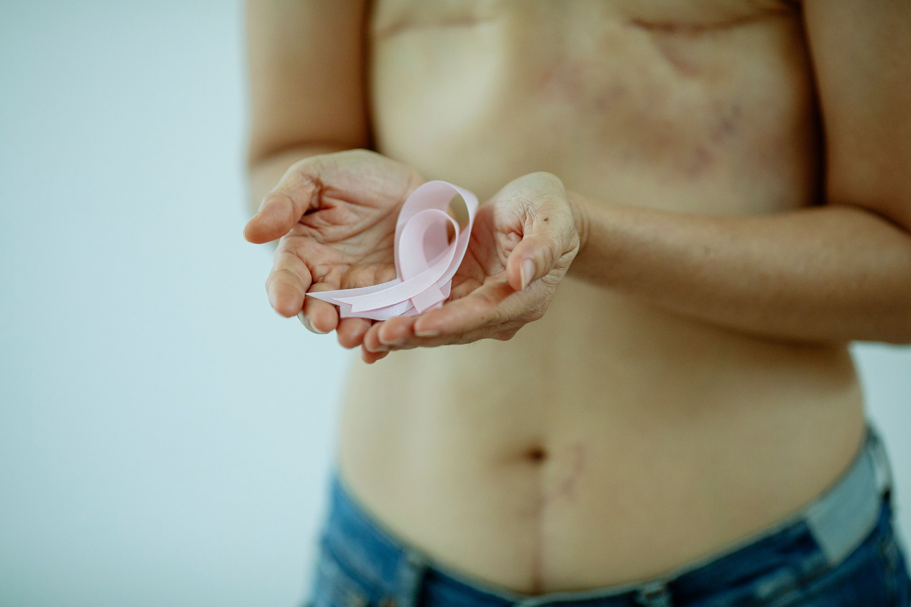

APRÈS LES TRAITEMENTS
Prendre soin de soi pendant la rémission
La fin des traitements marque une nouvelle étape. La peau, les cheveux et le corps peuvent encore évoluer pendant plusieurs semaines ou plusieurs mois.

Image générée par IA
UNE NOUVELLE ÉTAPE
Retrouver progressivement ses repères
Après les traitements, certaines manifestations peuvent persister ou évoluer : sécheresse, sensibilité, changements de pigmentation, repousse des cheveux ou fatigue.
Cette période peut aussi être l’occasion de réapprendre à écouter son corps, à adapter ses soins et à retrouver progressivement du confort et de la confiance.
CONSEILS APRÈS LES TRAITEMENTS
Des ressources pour accompagner l’après
Découvrez des conseils pour prendre soin de votre peau, de vos cheveux et de votre bien-être pendant la rémission.
Comment prendre soin de sa peau après les traitements ?
Sécheresse persistante, sensibilité ou inconfort : découvrez comment accompagner progressivement la peau après la fin des traitements.
Lire l'article →Repousse des cheveux après les traitements
Texture différente, cheveux plus fins ou plus bouclés : comprendre les changements qui peuvent accompagner la repousse.
Bientôt disponibleRetrouver confiance en son apparence
Après les traitements, le rapport au miroir et à son apparence peut évoluer. Quelques pistes pour retrouver progressivement ses repères.
Bientôt disponibleReprendre doucement ses habitudes
Soleil, activité physique, travail ou rythme de vie : avancer progressivement et respecter les besoins de son corps.
Bientôt disponibleÀ savoir : la rémission ne signifie pas toujours un retour immédiat à la situation d’avant. Certains effets peuvent persister et nécessiter un suivi ou des conseils adaptés.